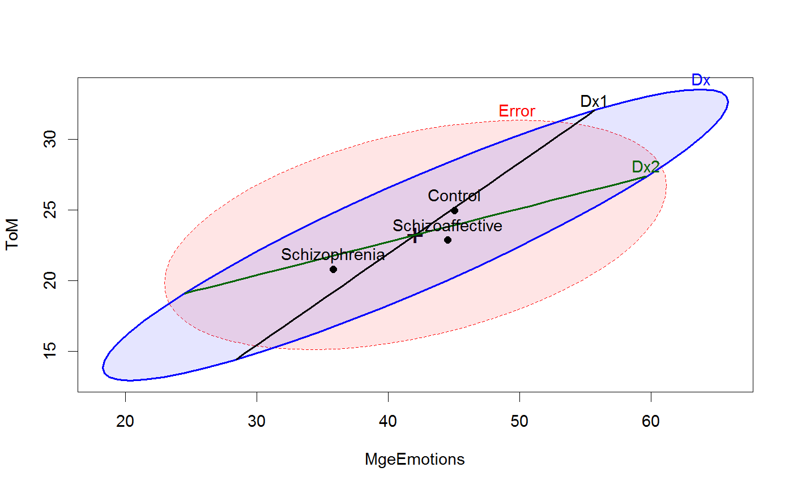

<!-- Generated by pkgdown: do not edit by hand -->
<!DOCTYPE html>
<html>
  <head>
  <meta charset="utf-8">
<meta http-equiv="X-UA-Compatible" content="IE=edge">
<meta name="viewport" content="width=device-width, initial-scale=1.0">

<title>Social Cognitive Measures in Psychiatric Groups — SocialCog • heplots</title>

<!-- jquery -->
<script src="https://code.jquery.com/jquery-3.1.0.min.js" integrity="sha384-nrOSfDHtoPMzJHjVTdCopGqIqeYETSXhZDFyniQ8ZHcVy08QesyHcnOUpMpqnmWq" crossorigin="anonymous"></script>
<!-- Bootstrap -->
<link href="https://maxcdn.bootstrapcdn.com/bootswatch/3.3.7/cerulean/bootstrap.min.css" rel="stylesheet" crossorigin="anonymous">

<script src="https://maxcdn.bootstrapcdn.com/bootstrap/3.3.7/js/bootstrap.min.js" integrity="sha384-Tc5IQib027qvyjSMfHjOMaLkfuWVxZxUPnCJA7l2mCWNIpG9mGCD8wGNIcPD7Txa" crossorigin="anonymous"></script>

<!-- Font Awesome icons -->
<link href="https://maxcdn.bootstrapcdn.com/font-awesome/4.6.3/css/font-awesome.min.css" rel="stylesheet" integrity="sha384-T8Gy5hrqNKT+hzMclPo118YTQO6cYprQmhrYwIiQ/3axmI1hQomh7Ud2hPOy8SP1" crossorigin="anonymous">


<!-- pkgdown -->
<link href="../pkgdown.css" rel="stylesheet">
<script src="../jquery.sticky-kit.min.js"></script>
<script src="../pkgdown.js"></script>
  
  
<!-- mathjax -->
<script src='https://mathjax.rstudio.com/latest/MathJax.js?config=TeX-AMS-MML_HTMLorMML'></script>

<!--[if lt IE 9]>
<script src="https://oss.maxcdn.com/html5shiv/3.7.3/html5shiv.min.js"></script>
<script src="https://oss.maxcdn.com/respond/1.4.2/respond.min.js"></script>
<![endif]-->


  </head>

  <body>
    <div class="container template-reference-topic">
      <header>
      <div class="navbar navbar-default navbar-fixed-top" role="navigation">
  <div class="container">
    <div class="navbar-header">
      <button type="button" class="navbar-toggle collapsed" data-toggle="collapse" data-target="#navbar">
        <span class="icon-bar"></span>
        <span class="icon-bar"></span>
        <span class="icon-bar"></span>
      </button>
      <a class="navbar-brand" href="../index.html">heplots</a>
    </div>
    <div id="navbar" class="navbar-collapse collapse">
      <ul class="nav navbar-nav">
        <li>
  <a href="../index.html">
    <span class="fa fa-home fa-lg"></span>
     
  </a>
</li>
<li>
  <a href="../reference/index.html">Reference</a>
</li>
      </ul>
      
      <ul class="nav navbar-nav navbar-right">
        
      </ul>
    </div><!--/.nav-collapse -->
  </div><!--/.container -->
</div><!--/.navbar -->

      
      </header>

      <div class="row">
  <div class="col-md-9 contents">
    <div class="page-header">
    <h1>Social Cognitive Measures in Psychiatric Groups</h1>
    </div>

    
    <p>The general purpose of the study (Hartman, 2016, Heinrichs etal. (2015)) was to evaluate patterns and levels 
of performance on neurocognitive measures among individuals with schizophrenia and schizoaffective disorder 
using a well-validated, comprehensive neurocognitive battery specifically designed for individuals with psychosis 
(Heinrichs etal. (2008))</p>
<p>The data here are for a subset of the observations in <code><a href='NeuroCog.html'>NeuroCog</a></code> for which
measures on various scales of social cognition were also available.
Interest here is on whether the schizophrenia group can be distinguished from the
schizoaffective group on these measures.</p>
<p>The Social Cognitive measures were designed to tap various aspects of the perception and cognitive
procession of emotions of others.  Emotion perception was assessed using a Managing Emotions (<code>MgeEmotions</code>)
score from the MCCB.  A "theory of mind" (<code>ToM</code>) score assessed ability to read the emotions of
others from photographs of the eye region of male and female faces. Two other measures,
externalizing bias (<code>ExtBias</code>) and personalizing bias (<code>PersBias</code>) were
calculated from a scale measuring the degree to which individuals attribute internal, personal
or situational causal attributions to positive and negative social events.</p>
    

    <pre class="usage"><span class='fu'>data</span>(<span class='st'>"SocialCog"</span>)</pre>
        
    <h2 class="hasAnchor" id="format"><a class="anchor" href="#format"></a>Format</h2>

    <p>A data frame with 139 observations on the following 5 variables.</p><dl class='dl-horizontal'>
    <dt><code>Dx</code></dt><dd><p>Diagnostic group, a factor with levels <code>Schizophrenia</code>, <code>Schizoaffective</code>, <code>Control</code></p></dd>
    <dt><code>MgeEmotions</code></dt><dd><p>Score on the Managing emotions test, a numeric vector</p></dd>
    <dt><code>ToM</code></dt><dd><p>Score on the The Reading the Mind in the Eyes test (theory of mind), a numeric vector</p></dd>
    <dt><code>ExtBias</code></dt><dd><p>Externalizing Bias score, a numeric vector</p></dd>
    <dt><code>PersBias</code></dt><dd><p>Personal Bias score, a numeric vector</p></dd>
  </dl>
    
    <h2 class="hasAnchor" id="details"><a class="anchor" href="#details"></a>Details</h2>

    <p>See <code><a href='NeuroCog.html'>NeuroCog</a></code> for a description of the sample.
Only those with complete data on all the social cognitive measures are included in this data set.</p>
<p>There is one extreme outier in the schizophrenia group and other possible
outliers in the control group, left in here for tutorial purposes.</p>
    
    <h2 class="hasAnchor" id="source"><a class="anchor" href="#source"></a>Source</h2>

    <p>Hartman, L. I. (2016). Schizophrenia and Schizoaffective Disorder: One Condition or Two? Unpublished PhD dissertation, York University.</p>
<p>Heinrichs, R.W., Pinnock, F., Muharib, E., Hartman, L.I., Goldberg, J.O., &amp; McDermid Vaz, S. (2015). 
Neurocognitive normality in schizophrenia revisited. 
<em>Schizophrenia Research: Cognition</em>, <b>2</b> (4), 227-232. doi: 10.1016/j.scog.2015.09.001</p>
    

    <h2 class="hasAnchor" id="examples"><a class="anchor" href="#examples"></a>Examples</h2>
    <pre class="examples"><div class='input'><span class='fu'>data</span>(<span class='no'>SocialCog</span>)
<span class='no'>SC.mod</span> <span class='kw'>&lt;-</span> <span class='fu'>lm</span>(<span class='fu'>cbind</span>(<span class='no'>MgeEmotions</span>, <span class='no'>ToM</span>, <span class='no'>ExtBias</span>, <span class='no'>PersBias</span>) ~ <span class='no'>Dx</span>, <span class='kw'>data</span><span class='kw'>=</span><span class='no'>SocialCog</span>)
<span class='no'>SC.mod</span></div><div class='output co'>#&gt; 
#&gt; Call:
#&gt; lm(formula = cbind(MgeEmotions, ToM, ExtBias, PersBias) ~ Dx, 
#&gt;     data = SocialCog)
#&gt; 
#&gt; Coefficients:
#&gt;              MgeEmotions  ToM       ExtBias   PersBias
#&gt; (Intercept)  41.80533     22.88849   1.75603   0.65488
#&gt; Dx1           3.24012      2.09636   1.01670  -0.07297
#&gt; Dx2          -4.34806     -1.02636  -0.85233  -0.01599
#&gt; </div><div class='input'><span class='fu'>Anova</span>(<span class='no'>SC.mod</span>)</div><div class='output co'>#&gt; 
#&gt; Type II MANOVA Tests: Pillai test statistic
#&gt;    Df test stat approx F num Df den Df    Pr(&gt;F)    
#&gt; Dx  2   0.21207   3.9735      8    268 0.0001817 ***
#&gt; ---
#&gt; Signif. codes:  0 <U+0091>***<U+0092> 0.001 <U+0091>**<U+0092> 0.01 <U+0091>*<U+0092> 0.05 <U+0091>.<U+0092> 0.1 <U+0091> <U+0092> 1</div><div class='input'>
<span class='co'># test hypotheses of interest in terms of contrasts</span>
<span class='fu'>print</span>(<span class='fu'>linearHypothesis</span>(<span class='no'>SC.mod</span>, <span class='st'>"Dx1"</span>), <span class='kw'>SSP</span><span class='kw'>=</span><span class='fl'>FALSE</span>)</div><div class='output co'>#&gt; 
#&gt; Multivariate Tests: 
#&gt;                  Df test stat approx F num Df den Df     Pr(&gt;F)    
#&gt; Pillai            1 0.1355144  5.21218      4    133 0.00062359 ***
#&gt; Wilks             1 0.8644856  5.21218      4    133 0.00062359 ***
#&gt; Hotelling-Lawley  1 0.1567573  5.21218      4    133 0.00062359 ***
#&gt; Roy               1 0.1567573  5.21218      4    133 0.00062359 ***
#&gt; ---
#&gt; Signif. codes:  0 <U+0091>***<U+0092> 0.001 <U+0091>**<U+0092> 0.01 <U+0091>*<U+0092> 0.05 <U+0091>.<U+0092> 0.1 <U+0091> <U+0092> 1</div><div class='input'><span class='fu'>print</span>(<span class='fu'>linearHypothesis</span>(<span class='no'>SC.mod</span>, <span class='st'>"Dx2"</span>), <span class='kw'>SSP</span><span class='kw'>=</span><span class='fl'>FALSE</span>)</div><div class='output co'>#&gt; 
#&gt; Multivariate Tests: 
#&gt;                  Df test stat approx F num Df den Df   Pr(&gt;F)  
#&gt; Pillai            1 0.0697390 2.492658      4    133 0.046059 *
#&gt; Wilks             1 0.9302610 2.492658      4    133 0.046059 *
#&gt; Hotelling-Lawley  1 0.0749672 2.492658      4    133 0.046059 *
#&gt; Roy               1 0.0749672 2.492658      4    133 0.046059 *
#&gt; ---
#&gt; Signif. codes:  0 <U+0091>***<U+0092> 0.001 <U+0091>**<U+0092> 0.01 <U+0091>*<U+0092> 0.05 <U+0091>.<U+0092> 0.1 <U+0091> <U+0092> 1</div><div class='input'>
<span class='co'>#' ## HE plots</span>

<span class='fu'><a href='heplot.html'>heplot</a></span>(<span class='no'>SC.mod</span>, <span class='kw'>hypotheses</span><span class='kw'>=</span><span class='fu'>list</span>(<span class='st'>"Dx1"</span><span class='kw'>=</span><span class='st'>"Dx1"</span>, <span class='st'>"Dx2"</span><span class='kw'>=</span><span class='st'>"Dx2"</span>),
        <span class='kw'>fill</span><span class='kw'>=</span><span class='fl'>TRUE</span>, <span class='kw'>fill.alpha</span><span class='kw'>=</span><span class='fl'>.1</span>)</div><div class='img'></div><div class='input'>
<span class='fu'>pairs</span>(<span class='no'>SC.mod</span>, <span class='kw'>fill</span><span class='kw'>=</span><span class='fu'>c</span>(<span class='fl'>TRUE</span>,<span class='fl'>FALSE</span>), <span class='kw'>fill.alpha</span><span class='kw'>=</span><span class='fl'>.1</span>)</div><div class='img'></div><div class='input'>
</div></pre>
  </div>
  <div class="col-md-3 hidden-xs hidden-sm" id="sidebar">
    <h2>Contents</h2>
    <ul class="nav nav-pills nav-stacked">
      
      <li><a href="#format">Format</a></li>

      <li><a href="#details">Details</a></li>

      <li><a href="#source">Source</a></li>
      
      <li><a href="#examples">Examples</a></li>
    </ul>

  </div>
</div>

      <footer>
      <div class="copyright">
  <p>Developed by John Fox, Michael Friendly.</p>
</div>

<div class="pkgdown">
  <p>Site built with <a href="http://hadley.github.io/pkgdown/">pkgdown</a>.</p>
</div>

      </footer>
   </div>

  </body>
</html>
